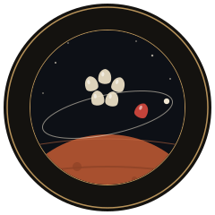

PerséphoneLe son et l'orientation du téléphone servent pendant la partie. Gardez l'écran allumé.
Choisissez un mot, puis un sujet.
Questions posées
MHz
Bruit entre les canaux
Posez le téléphone à plat dans la main et penchez-le à gauche ou à droite : un peu pour vous accorder, franchement pour parcourir la bande.
La partie est terminée.
Regardez la station.